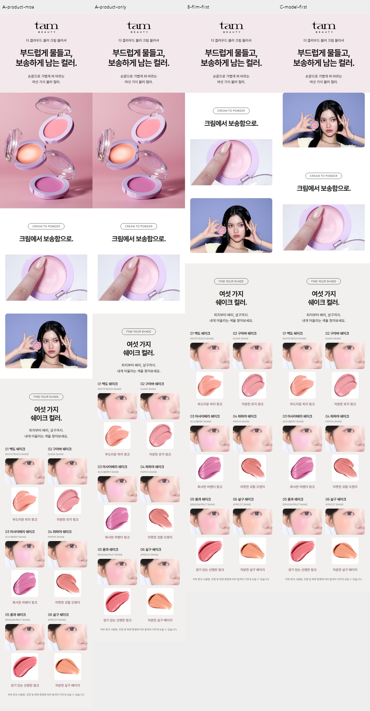
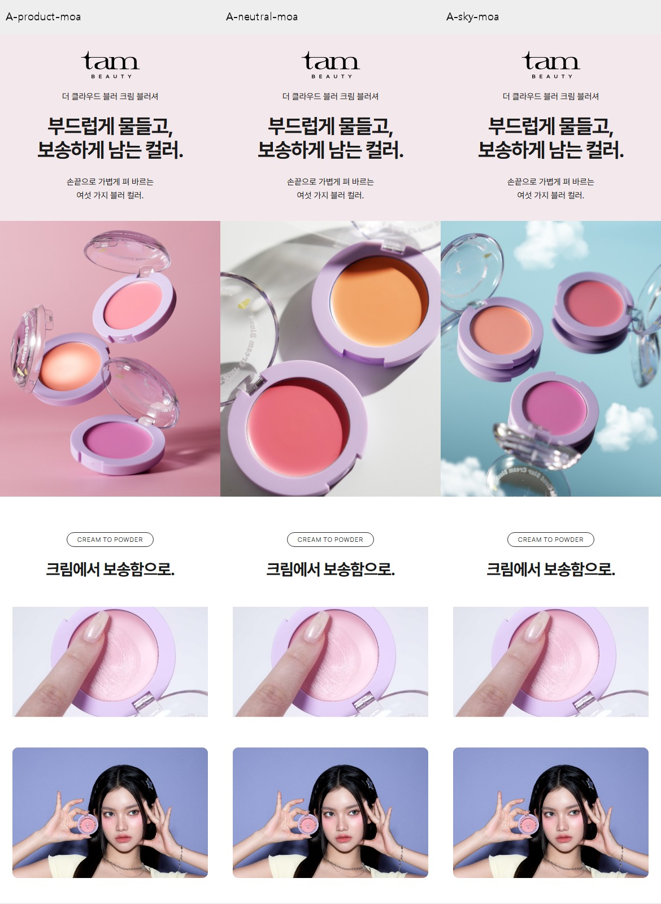

TAM BEAUTY · 2026.10.16 · 제작 전 비교와 최종 검수
무엇을 넣을지보다,
어떤 역할로 쓸지 먼저 정했습니다.
기존 탐뷰티 상세의 형식과 크림투파우더 전달을 기준으로 구성·도입 사진·모델 유무를 비교했습니다. 아래 판단은 구매 전환 실험 결과가 아닌 편집·디자인 판단입니다.
1. 구성 선택
| 선택지 | 이점과 남는 문제 | 결정 |
|---|---|---|
| 제품 → 제형 → 컬러 | 기존 도입을 유지하며 색을 고르기 전에 사용감을 이해할 수 있습니다. | 기본 구성 채택 |
| 영상으로 시작 | 제형 전달은 빠르지만 첫인상이 재생 여부에 의존합니다. | 이번 구성 제외 |
| 모델로 시작 | 완성 룩은 강하지만 제품보다 모델이 먼저 보입니다. | 이번 구성 제외 |
| 모아 생략 / 작은 크롭 | 생략하면 짧고 단순합니다. 작은 크롭은 제품과 전체 메이크업 인상을 함께 보여줍니다. | 얼굴·제품 중심 3:2 크롭 채택. 영상보다 크지 않게 제한. |
실제 모바일 배치 비교 4안 보기

2. 도입 사진 선택
| 후보 | 확인한 점 | 결정 |
|---|---|---|
| 핑크 제품컷 | 첫 시안과 이어지지만 제형 표면의 큰 반사광이 보송한 메시지와 충돌합니다. | 제외 |
| 회색 제품컷 | 중성 배경에서 제품 표면과 라벤더 용기가 읽힙니다. 원본 비율로 사용합니다. | 채택 |
| 구름 제품컷 | 클라우드 이름과는 어울리지만 하늘색에서 보라 모델 배경까지 색 변화가 커집니다. | 이번 상세에서 제외 |

3. 문안 역할
| 위치 | 담당하는 정보 | 최종 제목 |
|---|---|---|
| 첫 화면 | 볼에 표현되는 인상 | 부드럽게 물드는 보송한 블러 컬러. |
| 제형 | 크림투파우더 사용감 | 크림에서 보송함으로. |
| 컬러 | 발색 비교와 선택 | 나의 볼에 어울리는 여섯 가지 쉐이크 컬러. |
| 사용법 | 양과 덧바르기 | 소량으로 시작해, 원하는 색감만큼. |
| 성분 | 간결한 보조 정보 | 네 가지 식물성 오일을 담은 비건 포뮬러. |
| 마무리 | 색 선택으로 돌아가기 | 오늘의 볼에 어울리는 컬러를 골라보세요. |
영상의 숫자·단계선은 삭제했습니다. 자동재생이 꺼져도 제형이 이해되도록 짧은 설명은 남겼습니다. 성분 영역은 별도 사진을 덧붙이지 않고 제목 크기와 높이를 줄여 보조 정보로 정리했습니다.
4. 공개 전 확인
- 320·390·600·860·1440px 화면에서 넘침과 이미지 비율 확인
- 모아 이미지가 제형 영상과 동일한 폭·높이인지 측정
- 무음 자동재생, 수동 정지 유지, 화면 밖 정지, 동작 줄이기 설정 확인
- 기존 여섯 컬러의 발색·제형 사진 12개와 공식 제품 정보 일치 확인
- 영상은 기존 밝기 수정본과 동일한 파일 사용
- 기존 V1·V2와 다른 제품 상세는 유지
문안과 선택 논리는 별도 읽기 전용 자문도 거쳤습니다. 이 검수는 사용자 디자인 수용이나 효능·전환율 검증을 대신하지 않습니다.
3차 상세페이지로 이동 ↗